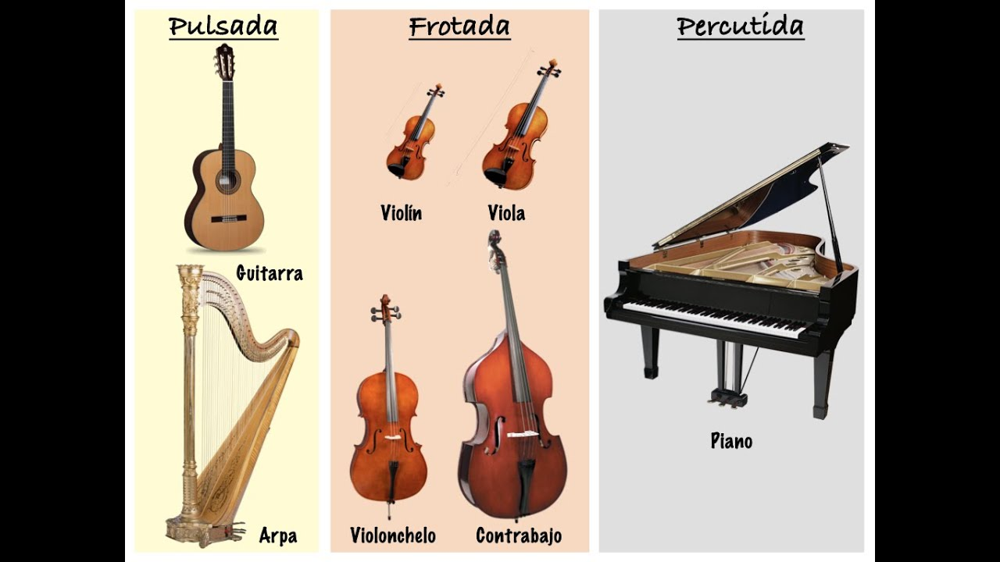
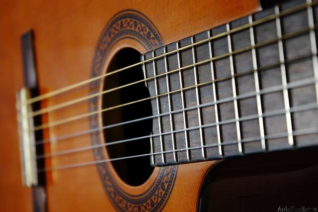

Los instrumentos de cuerda o cordófonos son instrumentos musicales que producen sonidos por medio de las vibraciones de una o más cuerdas,
usualmente amplificadas por medio de una caja de resonancia. Estas cuerdas están tensadas entre 2 puntos del instrumento y se hacen sonar pulsando,
frotando o percutiendo la cuerda.
La guitarra clásica ha sido durante 3.000 años el, probablemente,
instrumento más popular del mundo.
La guitarra es uno de los instrumentos musicales más populares debido a que son fáciles de transportar y no son muy costosas,
además, este instrumento tiene un rol importante en géneros musicales como el rock y el pop.